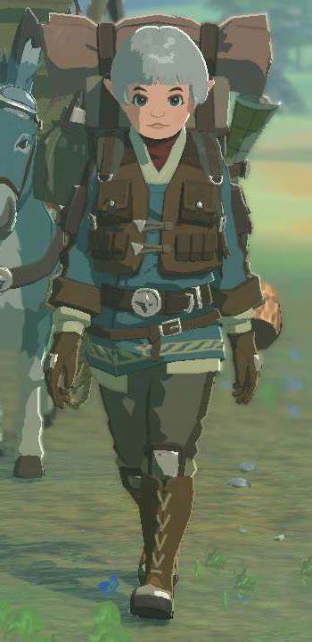
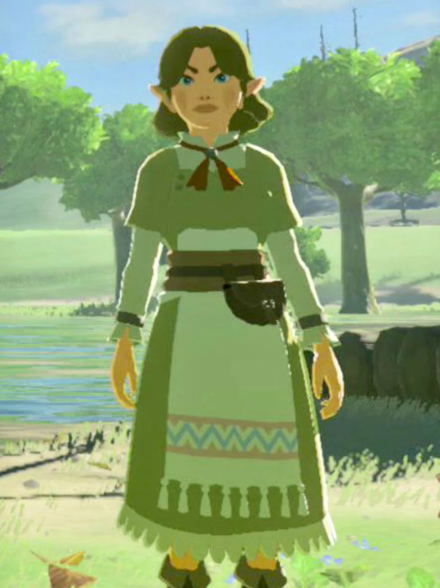
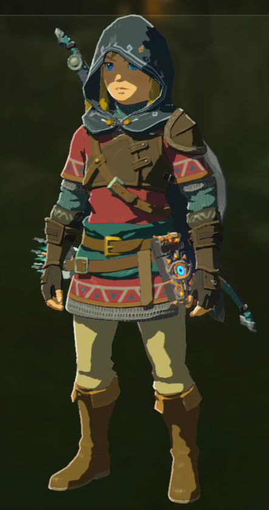
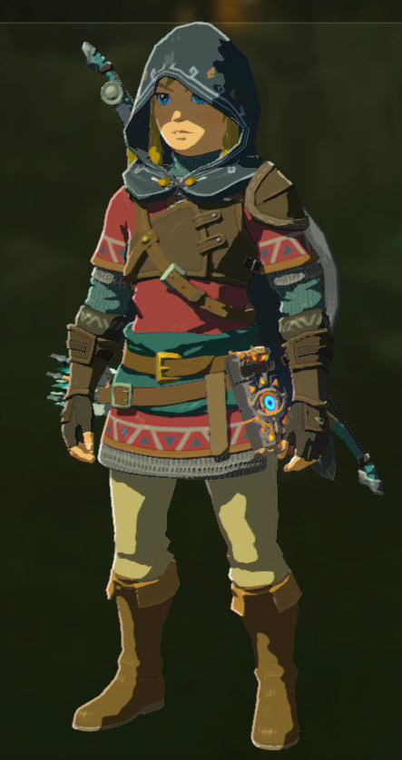
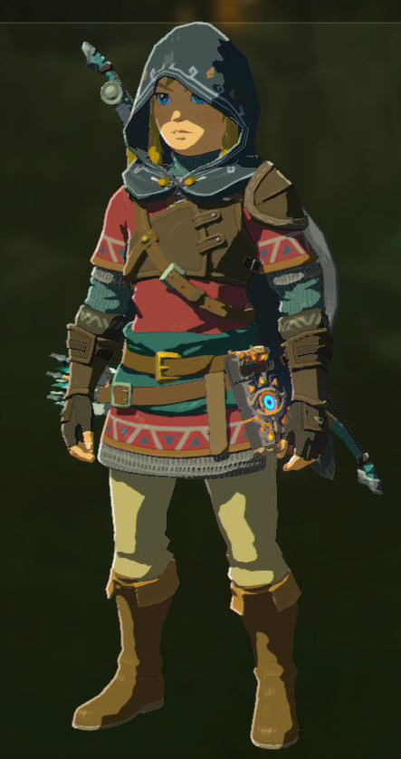

Le peuple Hylien
Le peuple Hylien est le peuple principal du Royaume d'Hyrule, connu pour ses oreilles pointues et sa grande sagesse.
Caractéristiques des Hyliens :
- Oreilles pointues
- Grande sagesse
- Capacité à utiliser la magie
- Héritage royal
Personnages Hyliens :


 

